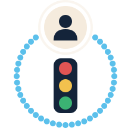

L'AI propone. Tu decidi.
I quiz di Human in the Loop
Il sito di supporto del libro di iTavix. Qui trovi le verifiche di ogni capitolo in versione interattiva, con punteggio immediato e spiegazioni, e la verifica finale del corso.
- Gratuito
- Nessuna registrazione
- Nessun dato personale
Parte I – Capire
Parte II – Il metodo
Parte III – Gli strumenti
Parte IV – Lavoro, regole e futuro
Alla fine del libro
Come funziona
Ogni quiz propone le stesse domande del libro in ordine diverso. Rispondi, leggi la spiegazione e, se sbagli, guarda quale paragrafo rileggere. Alla fine ottieni il punteggio e l'elenco dei paragrafi da ripassare.
Il risultato migliore di ogni quiz resta salvato soltanto sul tuo dispositivo, per mostrarti a che punto sei. Non viene inviato da nessuna parte.
Stato degli strumenti: la pagina aggiornata su assistenti, funzioni e regole citati nel libro.